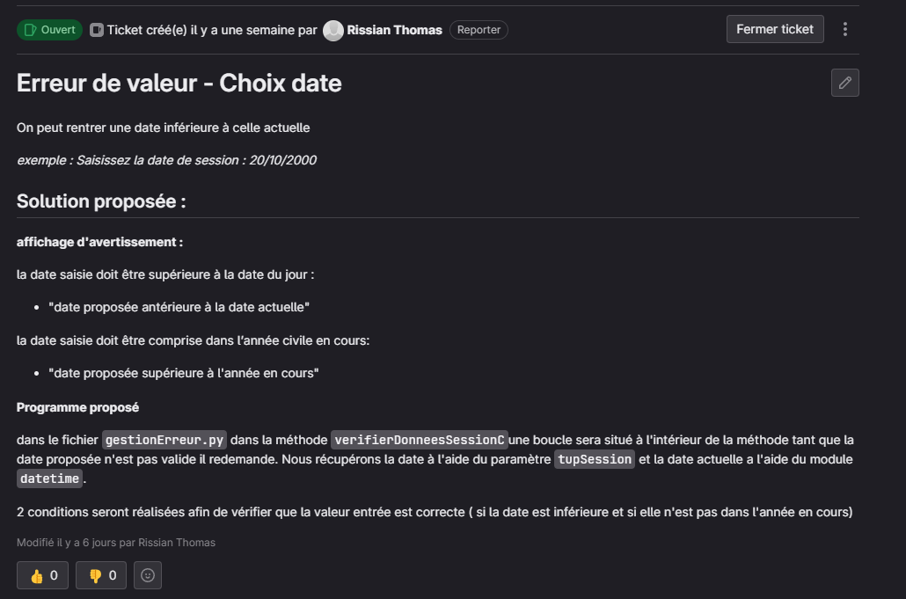
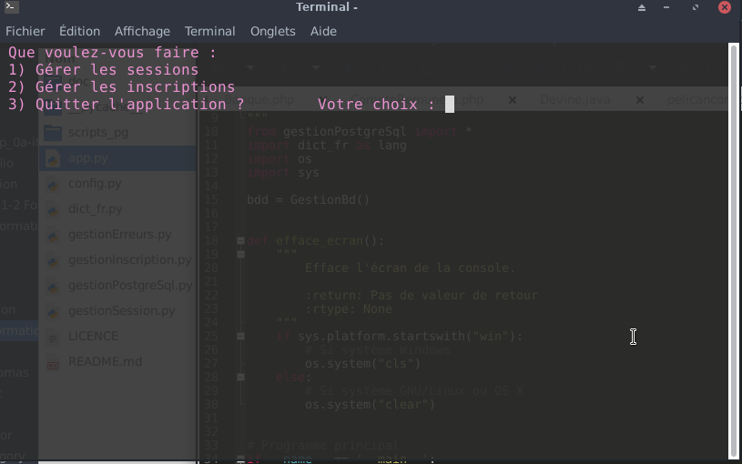
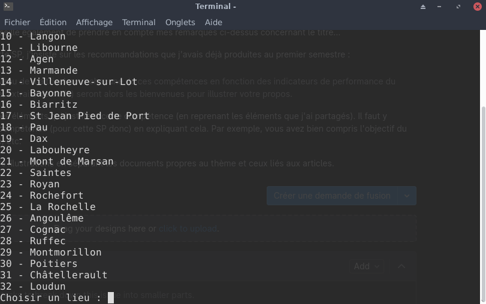

création des sessions dans le contexte de formation de la SNCF
Contexte :
Cet AP a été réalisé à 2 en peer programming, nous avions comme objectif :
- Observer les insuffisances dans le contrôle de validité des informations saisies
- Proposer des solutions pour garantir la concordance des informations saisies
- Compléter ou créer une procédure de façon à prendre en charge ces nouveaux besoins
Nous avons dû Analyser l’application afin de repérer les erreurs possibles au bon fonctionnement
Nous devions passer par des tickets assez détailler qui expliquer l’erreur, afin de pouvoir par la suite réaliser les modifications nécessaires sur l’application donner par notre professeur.
Chaque ticket devait être validé par notre professeur afin de passer à la suite, toutes erreurs dans le ticket étaient écris en commentaire afin de le résoudre.
Le problème devait être résolu sur l’application et push sur la forge logicielle framagit sur une nouvelle branche. Chaque ticket devait avoir une branche et chaque projet branche était indépendante et non liée aux autres tickets.



Environnement technologique :
- python
- geany
- pgAdmin (PostgreSQL)
- framagit
- ticket au format markdown
compétence mobilisée :
- B1.1.2 : Exploiter des référentiels, normes et standards adoptés par le prestataire informatique
Nous devions respecter les normes du PEP-8 afin de nous habituer et permettre à tout autre personnes externe de le comprendre (respecter les normes): Lors de l’activité j’ai compris les réglementations à respecter dont le PEP-8 mais ne l’est pas appliqué correctement dans le projet.
- B1.2.1 : Collecter, suivre et orienter des demandes
Nous avions à réaliser des tickets assez précis décrivant l’erreur et comment la résoudre : Au début nos tickets étaient mal rédigés et nous les avons corrigés et plus détailler en utilisant la syntaxe Markdown afin de résumer l’erreur et la démarche à suivre.
- B1.2.3 : Traiter des demandes concernant les applications
Après avoir réalisé le ticket nous devions résoudre cette erreur dans l’application : Pour le premier ticket à résoudre nous avons réussi à le faire en respectant les actions expliquées dans le ticket, mais nous avons réalisé la moitié du second ticket par manque de temps et n’avons pas pu terminer la correction des erreurs.
- B1.4.1 : Analyser les objectifs et les modalités d’organisation d’un projet
Nous devions analyser le projet afin de le comprendre et de pouvoir repérer différentes erreur puis nous les partager : Nous avons réussi à analyser le projet et nous avons pu trouver 5 erreurs dont 3 proposés par notre professeur, nous devions par la suite réfléchir à un moyen de corriger cette erreur pour la détailler dans le ticket.